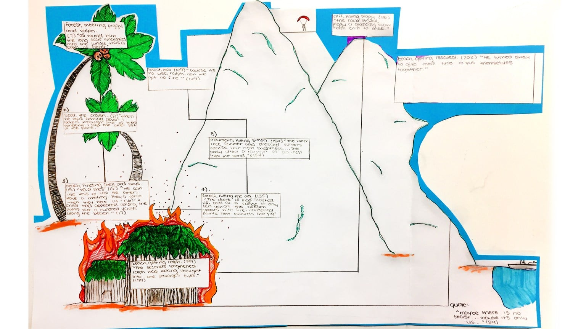

Lord of the Flies Island Map
Grades 7-10, 90min
In the Lord of the Flies Island Map activity, students team up to create an annotated map of the island from Lord of Flies, including important locations and events that help portray the novel’s story visually. Students also include a quote from the novel that relates to one of the central themes. Students are given significant flexibility on what they choose to include, but are evaluated based on the relevance and importance of each element.
Topics addressed
- Lord of the Flies: central themes, events, locations
- Primary CT concept: abstraction. Students are asked to represent the most important aspects of the novel in a visual manner, deciding which details are critical and which can be left out.
Students will be able to
- Create a map that represents the most important events and locations in Lord of the Flies
- Identify a quote from the novel that represents a central theme of the text
Materials
-
Slides:


-
Student handout:


- 11x17" paper
- Colored pencils / markers
Suggested lesson breakdown
This project assumes that your students have finished reading Lord of the Flies.
- 5min – introduce project, go over requirements and grading rubric
- 10-15min – students identify important events and locations from the novel, and a quote representing a central theme
- 60-80min – students create their maps
Common Core standards
-
CCSS.ELA-Literacy.RL.9-10.1
Cite the textual evidence that most strongly supports an analysis of what the text says explicitly as well as inferences drawn from the text. -
CCSS.ELA-Literacy.RL.9-10.2
Determine a theme or central idea of a text and analyze its development over the course of the text, including its relationship to the characters, setting, and plot; provide an objective summary of the text. -
CCSS.ELA-Literacy.RST.6-8.7
ntegrate quantitative or technical information expressed in words in a text with a version of that information expressed visually (e.g., in a flowchart, diagram, model, graph, or table).